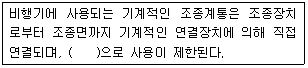
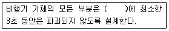
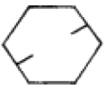
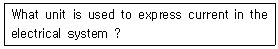
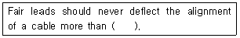
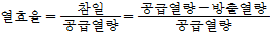
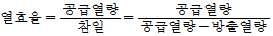
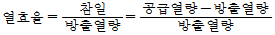
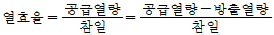

항공기관정비기능사 (2005-07-17 기출문제)
1과목: 비행원리
1. 동적세로안정에서 장주기 운동시 주요변수 중 무시해도 좋은 것은?
- 키놀이 자세
- 비행 고도
- 비행 속도
- 받음각
(정답률: 43%)

2. 버펫트(BUFFET)에 대한 설명 내용으로 가장 올바른 것은?
- 박리(Separation)에 대한 효과가 주날개에 작용하여 상승성능을 좋게 한다.
- 박리(Separation)에 대한 영향이 동체에 작용하여 전진성능을 방해한다.
- 박리(Separation)에 대한 후류의 영향으로 날개나 꼬리날개를 진동시켜 발생하는 현상이다.
- 박리(Separation)에 의한 영향으로 최대 항속거리를 유지할 수 있다.
(정답률: 85%)
3. 비행기의 착륙거리를 짧게하기 위한 조건이 아닌 것은?
- 착륙 시 무게를 가볍게 한다.
- 접지속도를 크게 한다.
- 착륙 중 양력을 작게 한다.
- 착륙 중 항력을 크게 한다.
(정답률: 76%)
4. 직렬식 회전날개 헬리콥터의 단점인 것은?
- 무거운 물체 운반에 부적합하다.
- 가로 안정성이 나쁘다.
- 기체의 폭이 작다.
- 구조가 간단하다.
(정답률: 70%)
5. 비행기의 턱 언더(Tuck under)현상을 방지해 주는 장치를 무엇이라 하는가?
- 마하 트리머(Mach trimmer)
- 요 댐퍼(Yow damper)
- 드래그 슈트(Drag shute)
- 오버행 밸런스(Overhang balance)
(정답률: 73%)
6. 다음 ( ) 안에 가장 알맞는 것은?

- 아음속
- 천음속
- 초음속
- 극초음속
(정답률: 66%)
7. 일반적으로 대류권에서 공기온도는 고도가 1000m 높아질때마다 6.5℃씩 감소한다. 해발고도에서의 공기온도가 30℃ 일때 고도 15000m에서의 온도는 얼마 정도인가?(오류 신고가 접수된 문제입니다. 반드시 정답과 해설을 확인하시기 바랍니다.)
- -57.5℃
- -67.5℃
- -56.5℃
- -66.5℃
(정답률: 65%)
8. 다음 ( ) 안에 알맞는 말은?

- 제한하중(LIMITED LOAD)
- 최소하중(MINIMUM LOAD)
- 운용하중(OPERATING LOAD)
- 종극하중(ULTIMATE LOAD)
(정답률: 62%)
9. 헬리콥터의 회전날개 깃이 플래핑하여 위로 올라간 경우 일어나는 현상으로서 가장 거리가 먼 내용은?
- 유도속도가 증가하여 받음각이 커진다.
- 양력계수가 작아진다.
- 양력이 줄어든다.
- 회전날개의 깃이 내려온다.
(정답률: 34%)
10. 입구의 지름이 10㎝이고, 출구의 지름이 20㎝ 원형관에 액체가 흐르고 있다. 지름 20㎝ 되는 단면적에서의 속도가 2.4m/sec일 때 지름 10㎝ 되는 단면적에서의 속도는 몇 m/sec 인가?
- 4.6
- 9.6
- 14.6
- 19.6
(정답률: 73%)
11. 대기를 이루고 있는 기체 중에서 부피비로 보았을 때 두번째로 많은 것은?
- 이산화탄소
- 아르곤
- 산소
- 질소
(정답률: 90%)
12. 비체적에 대한 설명 내용으로 가장 올바른 것은?
- 단위체적당 중량
- 단위질량당 체적
- 단위길이당 중량
- 단위면적당 작용하는 체적
(정답률: 50%)
13. 순항방식 중 고속 순항방식을 가장 올바르게 설명한 것은?
- 연료를 소비하는데 따라 순항속도를 점차 줄여가는 순항방식
- 연료소비에 관계없이 순항속도를 일정하게 유지하는 순항방식
- 비행기의 성능이 허용하는 최고속도로 비행하는 방식
- 기관의 출력을 일정하게 하여, 연료를 소비함에 따라 속도가 증가하는 순항방식
(정답률: 57%)
14. 비행기가 정지상태로부터 등가속도 a = 10m/sec2로 20초 동안 지상활주를 하였다면 이 비행기의 지상활주 거리는?
- 1㎞
- 1.5㎞
- 2㎞
- 2.5㎞
(정답률: 79%)
15. 플랩(FLAP)의 종류 중 캠버(CAMBER)의 증가 뿐만 아니라 날개의 면적까지 증가되어 양력의 증가가 가장 큰 플랩(FLAP)은?
- 단순플랩
- 스플릿 플랩
- 슬롯 플랩
- 파울러 플랩
(정답률: 60%)
16. 판재를 범핑 가공할 때 판재에 손상을 주지않고 충격을 가할 수 있는 망치(hammer)는?
- 볼핀(ball peen)해머
- 클로(claw)해머
- 보디(body)해머
- 맬릿(mallet)해머
(정답률: 86%)
17. 부품의 손상형태에서 깊게 긁힌 형태로, 표면이 예리한 물체와 닿았을 때 생긴것을 무엇이라 하는가?
- 균열(crack)
- 가우징(gouging)
- 스코어(score)
- 용착(Gall)
(정답률: 60%)
18. 안전 사고 방지의 5 단계 수립 중 제 1 단계는 무엇인가?
- 계획
- 사실 발견
- 분석
- 시정 방법의 선정
(정답률: 57%)
19. 그림의 항공기용 볼트에 관한 설명중 가장 적당한 것은?

- 알루미늄합금 볼트
- 부식방지용 볼트
- 저강도 볼트
- 재가공 볼트
(정답률: 80%)
20. 항공기의 견인시 견인속도는 얼마를 넘지 않아야 하는가?
- 5mph
- 10mph
- 15mph
- 30mph
(정답률: 70%)
2과목: 항공기정비
21. 보통 나무,종이,직물 및 잡종 폐기물 등과 같은 가연성 물질에 일어나는 화재를 어떤 화재라 하는가?
- A급
- B급
- C급
- D급
(정답률: 92%)
22. 다음 문장이 뜻하는 것은?

- volt
- Ampere
- ohm
- watt
(정답률: 63%)
23. 다음은 정밀측정기인 마이크로미터에 대한 설명이다. 가장 거리가 먼 내용은 어느 것인가?
- 보통 0.01mm 와 0.001mm 까지 측정 할 수 있다.
- 측정기 하나로 내측, 외측, 깊이를 모두 측정할 수 있는 장점이 있다.
- 엔빌과 스핀들이라는 명칭이 사용되는 구조 부분이 있다.
- 심블과 슬리브라는 명칭이 사용되는 구조부분이 있다.
(정답률: 62%)
24. 다음 중 표면에서부터 상당히 깊은 부분의 내부결함까지 정밀하게 검사할 수 있는 검사방법으로 가장 적합한 것은?
- 초음파 검사
- 자분탐상검사
- 와전류 검사
- 침투탐상검사
(정답률: 55%)
25. 정기적인 육안 검사나 측정 및 기능시험등의 수단에 의해 장비나 부품의 감항성이 유지되고 있는지를 확인하는 정비방식으로, 이 정비는 성능허용한계, 마멸한계, 부식한계등을 가지는 장비나 부품에 활용된다. 이것은 다음 중 어떤 정비인가?
- 시한성 정비
- 상태 정비
- 예비품 정비
- 신뢰성 정비
(정답률: 60%)
26. 항공정비 작업중 안전결선에 관한 안전 및 유의사항으로 틀린 것은?
- 신체부위가 와이어에 찔리지 않도록 주의한다.
- 와이어를 꼴 때는 팽팽한 상태가 되도록 한다.
- 와이어를 자를 때는 자른면이 직각 되도록 한다.
- 사용이 깨끗한 결선용 와이어는 다시 사용한다.
(정답률: 89%)
27. 항공기 기체의 정비작업에서의 정시점검으로 내부 구조검사에 관계되는 것은?
- A 점검
- C 점검
- ISI 점검
- D 점검
(정답률: 76%)
28. 토크 렌치 아암의 길이가 6in인 토크 렌치에 0.5in의 토크어댑터를 연결하여 토크의 값이 20ℓb-in되게 볼트를 토크 하였다. 볼트에 실제로 가해지는 토크의 값은 몇ℓb-in인가?
- 20.66
- 21.66
- 22.66
- 23.66
(정답률: 73%)
29. 다음 중 육안검사에 관한 설명으로 가장 거리가 먼 것은?
- 가장 오래된 검사방법이다.
- 빠르고 경제적이다.
- 신뢰성은 검사자의 능력과 경험에 따라 좌우된다.
- 보조 기구를 사용하면 육안검사가 아니다.
(정답률: 79%)
30. 얇은 패널에 너트를 부착하여 사용할 수 있도록 고안된 특수 너트는?
- 앵커너트
- 평너트
- 캐슬 너트
- 자동 고정 너트
(정답률: 58%)
31. 항공기의 예방정비 개념을 기본으로 하여 정비시간의 한계 및 폐기시간의 한계를 정해서 실시하는 정비방식은?
- 기체 정비
- 정시 정비
- 정기 점검
- 시한성 정비
(정답률: 85%)
32. 계기계통의 배관을 식별하기 위해 일정한 간격을 두고 색깔로 구분된 테이프를 감아두는데, 이때 붉은색은 어떤 계통의 배관을 나타내는가?
- 윤활계통
- 압축공기계통
- 연료계통
- 화재방지계통
(정답률: 68%)
33. 황목, 중목, 세목으로 나누는 줄(File)의 분류방법은?
- 줄눈의 크기
- 줄날의 방식
- 단면의 모양
- 줄의 길이
(정답률: 63%)
34. 고압가스 취급시의 안전사항 중 가장 올바른 것은?
- 산소는 가연성 물질이 아니어서 취급장소에 소화기의 비치는 필요치 않다.
- 히드라진은 인체에 무해하지만 취급에 별도의 안전 사항은 지킨다.
- 히드라진은 증발성이 강하므로 피부에 닿아도 상관 없다.
- 액체산소를 취급할 때는 장갑, 앞치마 및 고무장화 등을 착용해야 한다.
(정답률: 84%)
35. 다음 ( )안에 알맞는 말은?

- 12°
- 8°
- 5°
- 3°
(정답률: 49%)
36. 항공기 왕복기관에 적용하는 정적사이클은?
- 오토 사이클(Otto cycle)
- 브레이톤 사이클(Brayton cycle)
- 카르노 사이클(Carnot cycle)
- 프로톤 사이클(Proton cycle)
(정답률: 80%)
37. 가스터빈 기관의 윤활계통에서 일반적으로 윤활유 압력을 감지하는 곳은?
- 압력펌프 입구
- 압력펌프 출구
- 윤활유 탱크입구
- 윤활유 탱크출구
(정답률: 35%)
38. 터보제트 엔진에서 첫단계 터빈의 냉각은 어떤 방법을 주로 쓰고 있는가?
- 블리이드 공기냉각
- 수냉각
- 연료냉각
- 오일냉각
(정답률: 62%)
39. 가스터빈 기관에 대한 다음 설명 중 가장 올바른 것은?
- 총추력은 공기 및 연료의 유입 운동을 최대로 고려한 추력을 말한다.
- 추력 중량비가 클 수록 기관의 무게는 가볍다.
- 추력 비연료 소비율이 클 수록 기관의 효율이 높고, 성능이 우수하다.
- 추력은 흡입 공기의 중량 유량에 반비례한다.
(정답률: 27%)
40. 프로펠러의 효율을 향상시키기 위하여 후퇴각을 준 여러개의 깃으로 이루어져 있는 프로펠러의 명칭은?
- 터보 팬 프로펠러
- 터보 제트 프로펠러
- 프롭 팬
- 펄스 팬
(정답률: 43%)
3과목: 항공기관
41. 가스터빈 기관의 소음에 대한 설명으로 가장 거리가 먼 내용은?
- 소음의 주 원인은 배기가스이다.
- 소음의 크기는 배기가스 속도의 6∼8 제곱에 비례한다.
- 배기소음은 주로 고주파음이다.
- 소음은 배기노즐 지름의 제곱에 비례한다.
(정답률: 56%)
42. 항공기용 왕복기관에서 크랭크 축의 변형이나 비틀림 진동을 막아주기 위하여 무엇을 사용하는가?
- 카운터 웨이트
- 다이내믹 댐퍼
- 스테이틱바란스
- 바란스 웨이트
(정답률: 86%)
43. 열기관의 열효율은 공급된 열량과 기관에서 발생된 참일과의 비로 정의된다. 이것을 식으로 올바르게 나타낸 것은?




(정답률: 54%)
44. 기관의 임계고도(Critical altitude)를 가장 올바르게 표현한 것은?
- 기관이 안전하게 운전할 수 있는 최고 고도
- 기관이 최고 마력을 낼수 있는 고도
- 기관이 정격마력을 유지할 수 있는 최고 고도
- 기관이 정지할 때까지 도달할 수 있는 최고 고도
(정답률: 54%)
45. 기관 검사에서 육안으로 식별하는데 가장 어려운 결함 상태는?
- 찍힘(nick)
- 밀림(galling)
- 스코어링(scoring)
- 금속 피로(metal fatigue)
(정답률: 85%)
46. 가스터빈 기관에 사용하는 연료 여과기 중에서 여과기의 필터가 종이로 되어 있어 주기적인 교환이 필요한 것은?
- 카트리지형
- 스크린형
- 스크린-디스크형
- 석면형
(정답률: 77%)
47. 지름이 130mm인 피스톤에 40Kgf/cm2의 가스압력이 작용하면 피스톤에 미치는 힘은 얼마인가?
- 4307 Kgf
- 5307 Kgf
- 6307 Kgf
- 7307 Kgf
(정답률: 51%)
48. 피스톤의 링의 기능을 설명한 내용 중 가장 거리가 먼 것은?(오류 신고가 접수된 문제입니다. 반드시 정답과 해설을 확인하시기 바랍니다.)
- 연소실 내의 압력을 유지하기 위한 밀폐 기능
- 연소실 벽 면을 윤활하는 기능
- 피스톤으로부터 실린더 벽으로 열을 전도하는 기능
- 과도한 윤활유가 연소실로 들어가는 것을 막는 방지기능
(정답률: 42%)
49. 1렬 성형기관에서 실린더 번호 부여 방법을 가장 올바르게 설명한 것은?
- 가장 윗 부분에 수직으로 서있는 실린더를 1번으로 하여 기관의 회전 방향으로 번호를 붙여 나간다.
- 가장 윗 부분에 수직으로 서있는 실린더를 1번으로 하여 기관의 회전 반대 방향으로 번호를 붙여 나간다.
- 가장 아래 부분에 수직으로 서있는 실린더를 1번으로 하여 기관의 회전 방향으로 번호를 붙여 나간다.
- 가장 아래 부분에 수직으로 서있는 실린더를 1번으로 하여 기관의 회전 반대 방향으로 번호를 붙여 나간다.
(정답률: 66%)
50. 압축비가 7인 오토사이클의 열효율은 얼마인가? (단, 작동유체의 비열비 K = 1.4로 한다.)
- 0.542
- 0.624
- 0.657
- 0.672
(정답률: 33%)
51. 고압축비(high compression ratio)의 기관에 고온 스파크 플러그를 사용하였을 때 나타나는 가장 중요한 현상은?
- 기관이 시동후 즉시 꺼진다.
- 조기점화 현상이 나타난다.
- 연소정지 현상이 나타난다.
- 스파크 플러그에 탄소 찌꺼기가 부착된다.
(정답률: 66%)
52. 터빈 깃에 과열로 인하여 생기는 모양으로 가장 올바른 것은?
- 찌그러진 모양
- 우그러진 모양
- 물결무늬 모양
- 방사선 모양
(정답률: 71%)
53. 가스 터빈 기관의 연료계통에서 1차 연료와 2차 연료로 분류시키고, 기관이 정지할 때 매니폴드나 연료노즐에 남아있는 연료를 외부로 방출하는 역할을 하는 장치는?
- FCU
- P&D valve
- Fuel nozzle
- Fuel heater
(정답률: 83%)
54. 피스톤 헤드의 모양과 가장 거리가 먼 것은?
- 평면형
- 원형
- 오목형
- 돔(dome)형
(정답률: 55%)
55. 터보 팬 기관의 가장 큰 특징은 무엇인가?
- 연료 소비율이 크다.
- 소음이 크다.
- 초음속 항공기에 주로 사용한다.
- 아음속에서 효율이 좋다.
(정답률: 61%)
56. 가스터빈 기관의 공기흡입 부분의 압력 회복점에 대한 설명으로 틀린 것은?
- 압축기 입구의 정압상승이 도관안에서 마찰로 인한 압력 강하와 같아지는 항공기 속도를 말한다.
- 압축기 입구의 전압이 대기압과 같아지는 항공기 속도를 말한다.
- 공기흡입 도관의 성능을 좌우하는 요소이다.
- 압력 회복점이 높을수록 좋은 공기 흡입도관이다.
(정답률: 43%)
57. 4행정 왕복기관의 도시평균 유효압력이 10㎏f/cm2, 회전수 2,000rpm, 실린더의 안지름이 120mm, 행정이 150mm, 실린더수가 4개, 기계효율이 83% 일 때의 제동마력은?
- 125HP
- 140HP
- 150HP
- 155HP
(정답률: 35%)
58. 다음 중 가스터빈에서 실질적으로 가장 높은 압력이 나타나는 곳은?
- 압축기 출구
- 터빈입구
- 연소기 출구
- 배기노즐 입구
(정답률: 60%)
59. 가스터빈 기관의 점화장치 중에서 가장 간단한 점화장치는 어느 것인가?
- 직류 유도형 점화장치
- 교류 유도형 점화장치
- 교류 유도형 반대극성 점화장치
- 직류 유도형 반대극성 점화장치
(정답률: 53%)
60. 항공기 엔진의 윤활유 소기펌프(scavenge pump)는 압력펌프(pressure pump)보다 용량이 크다. 그 이유로 가장 올바른 것은?
- 공기가 혼합되어 체적이 증가하므로
- 압력 펌프보다 압력이 낮으므로
- 윤활유가 고온이 되어 팽창하므로
- 소기펌프가 파괴되기 쉬우므로
(정답률: 49%)